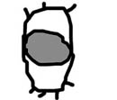

| MOKU |
It's MORE COOL if you wear sunglasses over your eyes. |
| め |
eye
★★★★★ |
| 目的 |
motive, not only for crimes.
★★★★☆
|
| 目立つ |
to stand out in a crowd.
★★★☆☆
|
| XXX 番目 のYYY |
thing in a row
★★★☆☆
KUNKUNCOUNTER
this is a term used in counting things in a row. For instance, in English we'd say "Second book from the right" or "Third shelf from the top" in Japanese, they'd say: 2番目のbook OR 4番目のshelf. |
| 駄目 |
no way!
★★★☆☆
KUNKUNKANA
this has so many meanings: useless, bad, 'stop!' or just 'no way!' |
| 目次 |
table of contents
★★☆☆☆
|
| 目撃者 |
a witness to a crime.
☆☆☆☆☆
NP
|
|
appearance
容姿 外見 見た目 外観 容貌 |
|
boss or superior person
目上 上司 課長 |
|
crevice
隙間 裂け目 |
|
eye
目 眼 |
|
mischievous
お茶目 やんちゃ |
|
motive
目的 動機 目標 狙い 的 意図 xxx目当て |
|
overlook
見過ごす 大目に見る |
 KANJIDAMAGE
KANJIDAMAGE
 Number
76
Number
76